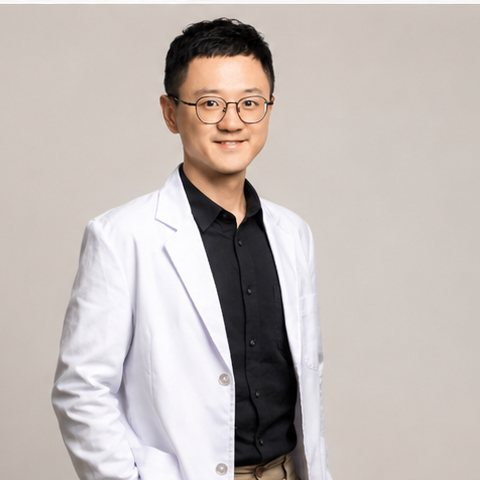

徐維廷
Wei Ting Hsu
諮商心理師｜諮商心理師證書 諮心字第005109號
關於我與我的諮商工作
我相信，每個人的困擾，都有其生活經驗與關係脈絡。焦慮、低落，或關係裡反覆出現的拉扯，常牽動我們如何看待自己，以及如何回應他人的期待。我的跨文化生活與企業工作經驗，讓我特別關注文化、性別與職場處境，如何影響一個人的選擇。在諮商中，我會和你一起停下來，聽見尚未說清楚的感受，理解那些曾經保護你、如今卻讓你受困的方式。我希望提供一段可以坦誠表達、容許猶豫與不同意見的關係，讓你按自己的步調，逐漸找到更貼近需要的生活方式。
服務對象與擅長議題
服務對象：青少年、成人與伴侶。提供國語、英語及粵語諮商。
擅長議題
- 情緒困擾與壓力調適：焦慮、低落、自我要求與身心壓力。
- 伴侶關係與親密互動：溝通衝突、疏離、信任與關係協議。
- 性與親密議題：性的困擾、慾望差異、性溝通與界線。
- 多元性別與性傾向：認同探索、出櫃及家庭與社會期待。
- 跨文化與異地適應：留學、返臺、在臺外籍人士與跨文化伴侶。
- 職涯與生命轉折：生涯選擇、中年轉職、角色變動與自我價值。
- 職場人際與工作壓力：倦怠、權力關係、衝突與工作生活平衡。
- 自我探索與原生家庭：依附需要、關係模式與人際界線。
諮商取向與工作方式
我以心理動力取向為基礎，結合系統觀點與團體關係的學習，理解當下的情緒與人際經驗。我們會從你最在意的事情開始，留意反覆出現的關係模式，也探索早期經驗與未被說出的期待，如何影響現在的生活。會談中，我可能邀請你停下來，感受此刻的情緒或身體反應，並談談我們互動時的經驗。伴侶工作則會關注衝突中彼此的情感需要，以及靠近與退開的互動循環。我也會和你一起辨認家庭、文化與組織帶來的影響，在理解自己之餘，練習表達需要與界線，思考生活中可行的改變。
專業資格與學經歷
專業資格：諮商心理師，諮心字第005109號。
學歷
- 輔仁大學心理學系 社會文化與諮商心理組 碩士
- 英國史旺西大學 Swansea University 管理碩士
- 英國倫敦帝國學院 Imperial College London 生物學士
過往臨床工作、教學與專業訓練經歷
- 臺北醫學大學專任諮商心理師，負責學生諮商與國際學生個案管理。
- 具身心科診所及心理諮商所工作經驗；於臺北榮民總醫院桃園分院精神科完成全職實習，接受客體關係式督導。
- 曾任臺灣團體關係研習會口譯、口譯組總召、行政助理主席與受訓顧問
- 曾任馬偕醫護管理專科學校兼任講師
- 與多間管理顧問公司合作，提供職場心理健康與跨文化相關服務。
- 曾任荷商帝斯曼營養品台灣區行銷主任，具企業行銷與跨文化工作經驗。
諮商收費與會談時間
- 個別心理諮商：NT$2,500／50分鐘
- 伴侶及婚姻諮商：NT$3,500／80分鐘
- 家庭諮商：NT$3,500／80分鐘
可預約時段
週一：上午、晚上。
實際可預約時間以預約確認結果為準。